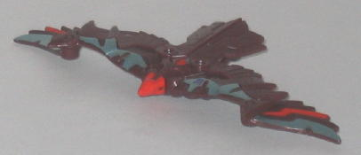
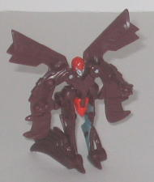
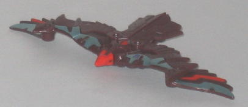
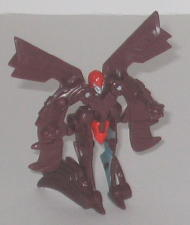
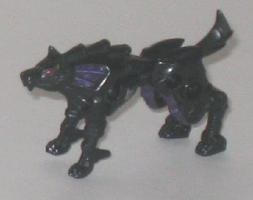
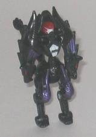
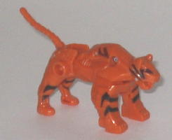
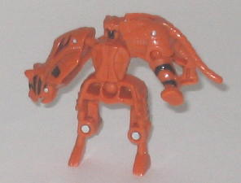

 
Difficulty of Transformation : Very Easy
Color Scheme : Moderately dark brown, light metallic silvery blue, and some light red and silver
Individual Rating : 7.8
Allegiance
: Decepticon
Size
: Mini-Con (3-pack)
Overall Rating
: 6.7
 Dreadwing
Dreadwing


Difficulty of Transformation
: Very
Easy
Color Scheme
: Moderately dark brown,
light metallic silvery blue, and some light red and silver
Individual Rating
: 7.8
Dreadwing is a technorganic
bird, most likely a turkey vulture. This mode looks incredibly good, especially
for a Minicon. The robot head is rather visible in the middle of the back,
but otherwise there's no robot extras whatsoever in this mode, even though
it's very skinny without any undercarriage junk to speak of. Because of
the transformation, he can't move at the base of the wings, alas, though
his wing tips can move forwards and backwards (though a side effect of
this is that the wing tips are actually noticeably lower than the rest
of the wing) and his little bird legs are on ball joints. His head is also
theoretically supposed to move up and down, but if you try to move it from
its default position it snaps off, which is kind of a downer. There's a
fair amount of mold detailing in this mold, with little metallic feathers
and panels everywhere. He's also got a good amount of paint detailing to
set of his only actual plastic color, brown, so he doesn't look too bland--
however, some really could have been used on the tail feathers, as well.
Plus, the light red paint all over his bird head just looks ugly without
any other paint apps on the eyes or something-- it also makes the mold
details on the head harder to see. Dreadwing has two Minicon ports, both
on the underside of his wings, near his shoulder blades.
Dreadwing's robot mode
isn't quite as good as his bird mode, but it's still pretty good, particularly
for a Classics Minicon. Making his wings into his legs was an interesting
tactic, though it does make the legs much skinnier from a frontal view
compared to a side view. The wing tips are used as heels to help him stand,
however, so he's very stable. The wings on his back complement this mode
very nicely and don't just look like back kibble, and his head has a very
sleek, bird-like design which is certainly fitting for the mold. The bird
legs becoming the arms does look fairly odd, but they're still definitely
recognizable as hands, which is more than I can say for some of the other
Classics Minicons... His bird head being used as this mode's crotch does
look pretty weird, though, no way around that. Dreadwing could also definitely
use some more paint apps in this mode, nearly all of them are hidden from
view here, so he looks a little dull. Dreadwing has a few points of articulation,
he but a whole lot-- he can move up and down at the shoulders, and his
hips and elbows are on ball joints.
Dreadwing has a few
flaws, but none are particularly crippling, and all in all he's a very
unique, yet still functional, bird Transformer. My personal favorite of
the Predator Attack Team.
 Overbite
Overbite


Difficulty of Transformation
: Very
Easy
Color Scheme
: Black and some dark
metallic purple, dark red, and dull off-white
Individual Rating
: 6.4
Overbite's beast mode
is a wolf, and is the best alternate mode out of the Predator Attack Team.
The proportions are spot-on all around, and he's got EXCELLENT technorganic
mold detailing, especially on the head, which is molded into a permanent
snarl. (Say, why wasn't HE named Snarl instead of the tiger? Ah, well.)
The black-and-purple color scheme with blood red optics positively screams
"Evil Decepticon", though there really needs to be more paint apps in this
mode and more color variety-- the purple is too dark, so it really doesn't
give off much contrast against the black at all. Sadly, Overbite's front
legs and wolf jaw can't move at all, though his he can move at the waist
on a ball joint, his rear legs can move at the hips and knees, and his
tail can move up and down in this mode. Overbite's two Minicon ports are
on his back legs, above the knee.
Overbite's robot mode
is what brings his score down quite a bit. I don't mind the "chicken walker"
style legs, but his feet are so small it's very hard to get him to stand
up on them. Using the halves of his wolf head and neck as his arms wouldn't
be so bad if their jaws were open to make them look more like claw-hands,
and if they weren't completely hollow from the backside. As it is, they're
pretty poor-looking arms. His skinny chest looks fairly good and adds some
character (as well as a bit of much-needed color variety), but I'm not
sure what's going on with his head sculpt. I can make out a helmet and
a gas-mask-like mouth, but there's no real face to speak of- no optics,
no nose, nothing. I'm also not fond of how the front wolf legs just stick
straight out of his upper back, when a simple ball joint would have allowed
them to fold downwards and out of the way so there weren't such an eyesore.
On the plus side, at least Overbite does have some more color variety in
this mode, thanks to his chest and head paint apps, and his articulation
is pretty good for a Minicon-- he can move at the shulders, hips, knees,
and waist, and the shoulders and waist are on ball joints.
Overbite has an excellent
beast mode, but he has some definite kibble problems in robot mode. Plus,
he has a hard time standing up in robot mode, and he really needs some
more color variety, especially in beast mode.
 Snarl
Snarl


Difficulty of Transformation:
Very
Easy
Color Scheme
: Dull orange and some
black and dull metallic bronze
Individual Rating
: 5.9
Snarl's beast mode is
a bengal tiger-- another nod to a Cincinnati sports team, the Cincinnati
Bengals, which some of the toy designers are fans of. (This was also done
once before, on
Hightail
as a homage to the
Cincinnati Bearcats.) This mode is pretty good, except for one thing--
the front legs are way too wide compared to the back legs, they really
don't fit in with the otherwise fairly sleek cat form. I love all the technorganic
mold detailing he's covered in, though he desperately needs a more varied
color scheme-- there's not nearly enough black and bronze stripes on his
form to distract the eye from what is otherwise a solidly orange figure.
Snarl's articulation is pretty limited in this mode, though to be fair
it's hard to get in much articulation in a beast mode of this size. Snarl
can move his jaw, as well as his tail, but none of his appendages can move
with the exception of his rear left leg, which can move out to the side,
a pretty useless point of articulation. Snarl's Minicon port is right above
the rear right leg.
Snarl's robot mode is
rather funky-looking compared to his beast mode. The actual main body looks
fine enough, no problems there. I especially like the slightly asymmetrical
technorganic detailing on his chest, it looks great. The black paint on
his face makes it rather hard to see the mold details there, however. I
don't mind the overall silouhette form of his legs-- they're a little skinnier
below the knees than above them, but not so much it looks totally off.
What I really dislike about the legs are that the upper legs have the hollow
parts and the ball joints exposed, as obvious as can be. Something like
that really gets me, as it makes it really doesn't look good on a toy at
all. The right arm is made of the tiger head and upper body. I dont' mind
using the tiger head for a hand, as it looks enough like a claw and there's
even a little nub on the inside of the mouth that looks like a gun nozzle,
but the upper arm is way too wide proportionally because of all the animal
kibble on it. The left arm doesn't look like an arm in the least, it's
just he back half of the beast mode on his shoulder. One of the back tiger
legs is supposed to be turned forwards to be a kind of arm, but it's a
really pathetic attempt at one-- there's not even a fist molded on the
inside of it or anything. Snarl's articulation is also fairly limited--
he can move at the waist, at the right shoulders (at two points), the claw-hand,
the left shoulder, and the foot-hand, but that's it.
Snarl has a decent,
if slightly mis-proportioned beast mode, but a really odd-looking robot
mode with incredibly weak arms. He also really needs some more color variety.
My least favorite of the Predator Attack Team.
The Predator Attack Team has one pretty good team member, Dreadwing, but two rather mediocre members. Still, they are one of only two beast Minicon teams out there, which definitely ups their desirability factor a bit, at least for me. If you're a fan of beasts and Minicons, you might want to consider picking them up, as none of them are horribly bad, at the very least.
Review by Beastbot